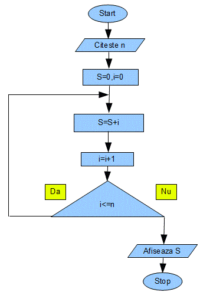
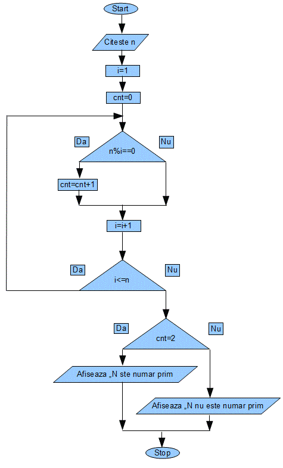
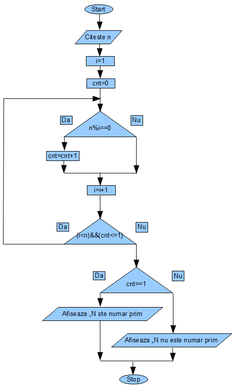
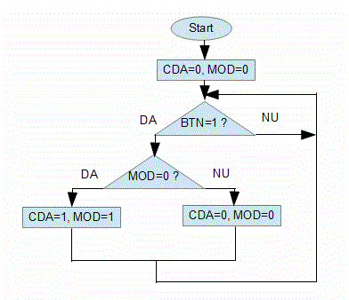
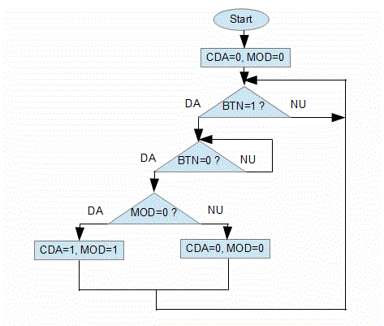
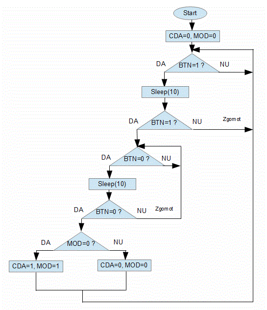

Scheme logice
- Realizati schema logica a unei aplicatii care afiseaza numerele de la 1 la N
- Realizati schema logica a unei aplicatii care afiseaza primele N de numere pare
- Realizati schema logica a unei aplicatii care afiseaza suma primelor N de numere
- Realizati schema logica a unei aplicatii care afiseaza produsul primelor N de numere
- Realizati schema logica a unei aplicatii care afiseaza numere de forma N1xN2 de exemplu 4x5
- Realizati schema logica a unei aplicatii care afiseaza numere de forma N1yN2x de exemplu 7y4x
- Realizati schema logica a unei aplicatii care afiseaza numerele de la 1 la N cate k pe un rand
- Realizati schema logica a unei aplicatii care simuleaza comanda pornit oprit de la un buton
- Realizati schema logica a unei aplicatii care simuleaza comanda pornit oprit de la un buton cu delay pentru eliminarea zgomotelor
Schema logica pentru suma primelor n numere naturale

Schema logica pentru a determina daca un numar este prim

Schema logica pentru a determina daca un numar este prim-metoda optimizata

Schema logica pentru comanda pornit oprit de la un buton in care nu se asteapta relaxarea butonului, generandu-se astfel
o multime de comenzi start stop

Schema logica pentru comanda pornit oprit de la un buton in care se asteapta relaxarea butonului, dar nu se tine
seama de zgomote

Schema logica pentru comanda pornit oprit de la un buton in care se asteapta relaxarea butonului, si se tine
seama de zgomote
